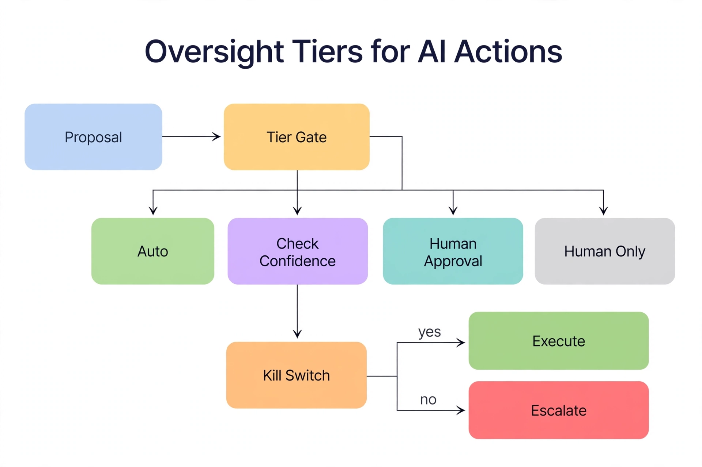

Chapter 39: Responsible AI in Database Operations
This book has spent thirty-eight chapters handing you sharper tools: models that predict incidents, LLMs that write remediation plans, automation that kills queries and rebuilds indexes on its own authority. Chapter 39 asks the uncomfortable question every one of those tools raises: what happens when the AI is wrong? A forced query plan that tanks the checkout flow. An anomaly model that pages the on-call team forty times during a planned batch window until they mute the channel. An LLM-generated runbook that drops the wrong index because the context window truncated the schema name. The blast radius of AI-assisted operations is measured in production downtime, and "the model said so" is not an explanation that survives a postmortem — or an audit.
Responsible AI in database operations is not a philosophy seminar. It is a set of engineering controls: explainability requirements for every automated action, human oversight tiers matched to action risk, validation protocols that prove a model is safe before it touches production, governance over what data feeds your AI systems, and an incident response playbook for the day automation causes the outage. This chapter builds each control as something a DBA team can implement this quarter.
---
The Failure Modes Are Specific — Name Them
Vague worry produces vague controls. The failure modes of AI in database operations are concrete, and each maps to a specific mitigation:
Confident wrongness. LLMs produce fluent, authoritative explanations for actions that are incorrect — a remediation plan that misreads the wait stats and kills the wrong session. Mitigation: the LLM never executes directly; it selects from a bounded action library, and every selection carries the evidence it cited, which a human or a rules engine can verify.
Silent model decay. An anomaly detector trained on last year's workload slowly goes blind as the workload changes, and nobody notices because "no alerts" looks like "no problems." Mitigation: monitor the monitors — track alert rates, false positive rates, and prediction distributions as first-class metrics (Chapter 10's automation observability).
Automation bias. On-call engineers stop questioning the system's recommendations because it is usually right — until the once-a-year case where it is catastrophically wrong and nobody is mentally engaged enough to catch it. Mitigation: keep humans in the decision loop for high-risk actions even when confidence is high, and rotate engineers through shadow-mode review so skepticism stays exercised.
Data leakage into models. Training extracts and LLM context payloads carry PII into systems with weaker controls than the source database. Mitigation: the privacy pipeline from Chapter 36 — tokenization, classification gates, audit — applied to every AI input, not just the "official" ML projects.
Unbounded action space. An LLM with a database connection and a vague mandate improvises — generating DDL nobody reviewed, disabling constraints to "fix" a load failure. Mitigation: parameterized executors with allowlisted actions only (Chapter 10's pattern); the model proposes, the allowlist disposes.
Write these five on your team's wiki. Every control in the rest of this chapter traces back to one of them.
---
Explainability: Every Automated Action Must Show Its Work
The minimum bar for responsible automation: for every action the system takes or recommends, you can answer three questions — what evidence did it use, what rule or model turned that evidence into this decision, and what would have changed the decision? If you cannot answer those from your logs, the action was not explainable and should not have run autonomously.
In practice this means your automation audit log (Chapter 10) needs four fields beyond the action itself: the input snapshot (the metrics, query texts, or wait stats the decision was based on — store the actual values, not a reference), the model version (which anomaly model, which LLM, which prompt version produced the decision), the reasoning trace (the LLM's stated rationale or the model's contributing features), and the counterfactual threshold (the confidence or score boundary the decision crossed — so a reviewer can see it was a close call, not a slam dunk).
-- Explainability audit: can we reconstruct WHY each automated action ran?
CREATE TABLE ml.automation_decisions (
decision_id BIGINT IDENTITY PRIMARY KEY,
decided_at DATETIME2 NOT NULL DEFAULT SYSUTCDATETIME(),
action_type VARCHAR(60) NOT NULL, -- e.g. 'force_plan', 'kill_session'
action_target NVARCHAR(300) NOT NULL, -- query_id, session_id, index name
-- The four explainability fields:
evidence_json NVARCHAR(MAX) NOT NULL, -- input snapshot: metrics/query text cited
model_version VARCHAR(60) NOT NULL, -- 'isolationforest_repl_v7', 'gpt-4o / prompt v12'
reasoning_trace NVARCHAR(MAX) NOT NULL, -- LLM rationale or feature contributions
confidence FLOAT NOT NULL, -- score that crossed the gate
gate_threshold FLOAT NOT NULL, -- the boundary it crossed
gate_outcome VARCHAR(20) NOT NULL, -- 'auto_execute' | 'approval' | 'escalate'
approver SYSNAME NULL, -- who approved, if approval-gated
outcome VARCHAR(30) NULL, -- 'resolved' | 'unresolved' | 'false_positive'
evidence_hash CHAR(64) NOT NULL -- SHA-256 of evidence_json: tamper-evident
);
GO
-- Postmortem query: "show me every close-call autonomous action last week"
SELECT decided_at, action_type, action_target, confidence, gate_threshold,
LEFT(reasoning_trace, 200) AS rationale
FROM ml.automation_decisions
WHERE gate_outcome = 'auto_execute'
AND confidence < gate_threshold + 0.10 -- decided within 10 points of the boundary
AND decided_at > DATEADD(DAY, -7, SYSUTCDATETIME())
ORDER BY decided_at DESC;The close-call query is the most valuable review artifact your team will produce. Actions that barely cleared the confidence gate are where the next incident hides — reviewing them weekly trains both the engineers' judgment and, over time, your threshold calibration. The evidence_hash makes the record tamper-evident: if anyone asks whether the reasoning trace was edited after the fact, the hash answers.
---
Human Oversight Tiers Matched to Blast Radius
Not every AI action deserves the same oversight. The responsible pattern is a tiered model where the level of human involvement scales with the blast radius of being wrong — and the tiers are defined before the incident, not improvised during it.
Tier 0 — Observe only. The AI scores, predicts, and recommends; it takes no action and changes no state. Anomaly scores, forecast dashboards, LLM-generated incident summaries. No approval needed because there is nothing to approve — but the outputs must be labeled as machine-generated so engineers calibrate their trust.
Tier 1 — Autonomous reversible actions. Kill an idle-in-transaction session, cancel a runaway query, restart a stuck agent, force a Query Store plan back to the last known good. Each action is individually reversible or self-healing, and each is logged with full explainability. Autonomous execution allowed above the confidence gate; below it, escalate.
Tier 2 — Approval-gated state changes. Index rebuilds with locking, statistics updates on billion-row tables, configuration changes, throttling replication throughput. The AI prepares the complete change package — evidence, reasoning, predicted impact, rollback statement — and a human approves with one action. The approver is accountable; the AI is advisory.
Tier 3 — Human decides, AI assists. Failover decisions, schema changes, anything touching backup/recovery posture or security boundaries. The AI may gather evidence and draft the plan, but the decision and the execution authorization belong to a human, every time, with no autonomous path no matter how confident the model claims to be.
-- Oversight tier registry: the allowlist the executor enforces.
-- If an action is not on this list, it cannot run. Period.
CREATE TABLE ml.action_oversight_tiers (
action_type VARCHAR(60) PRIMARY KEY,
tier TINYINT NOT NULL CHECK (tier BETWEEN 0 AND 3),
min_confidence FLOAT NOT NULL, -- below this: escalate regardless of tier
reversible BIT NOT NULL,
description NVARCHAR(500) NOT NULL
);
GO
INSERT INTO ml.action_oversight_tiers
(action_type, tier, min_confidence, reversible, description)
VALUES
('generate_incident_summary', 0, 0.00, 1, 'Read-only analysis, no state change'),
('cancel_long_query', 1, 0.80, 1, 'KILL is recoverable; session reconnects'),
('kill_idle_transaction', 1, 0.85, 1, 'Releases locks; app retries'),
('restart_stuck_agent', 1, 0.80, 1, 'Agent restart is idempotent'),
('force_query_store_plan', 1, 0.85, 1, 'Reversible via sp_query_store_unforce_plan'),
('rebuild_index_online', 2, 0.90, 0, 'Locking risk on large tables; needs approval'),
('update_statistics_fullscan', 2, 0.90, 1, 'Plan changes possible; approve first'),
('alter_maxdop', 2, 0.95, 1, 'Instance-wide perf impact; approve first'),
('initiate_failover', 3, 1.01, 0, 'Never autonomous: confidence gate unreachable'),
('alter_schema', 3, 1.01, 0, 'Never autonomous: human decision only');
GO
-- The executor's gate check: tier + confidence decide the path
-- Tier 3 rows carry min_confidence 1.01 so no model output can ever clear them.The 1.01 confidence trick for Tier 3 is deliberate engineering: since no model outputs confidence above 1.0, Tier 3 actions are structurally incapable of autonomous execution. This is not a policy document asking nicely — it is a constraint the executor enforces on every call. When the new engineer asks "could the AI fail over the AG by itself," the answer is "the allowlist makes it mathematically impossible," and you can show them the row.
---
Validating Models Before They Touch Production
A model that performs well on a training set can still be dangerous in production. Responsible deployment requires validation against the specific ways database AI fails: regime change (the workload the model never saw), feedback loops (the model's own actions changing the data it learns from), and correlated errors (every model failing the same way at once).
Backtest on historical incidents. Before an anomaly model goes live, replay it against your incident history: feed it the telemetry from six months ago and check whether it would have flagged the real incidents — and how many false alarms it would have raised. A model with 95% recall and a 40% false positive rate will train your team to ignore it; you want the precision/recall tradeoff decided deliberately, with the on-call team in the room, before the first page.
Shadow mode with decision logging. Run the full pipeline — detection, LLM diagnosis, action selection — for four to eight weeks without executing anything. Log every decision the system would have made alongside what the human actually did. Promote a playbook to autonomous execution only when the shadow log shows agreement above 90% on both diagnosis and action. This is the same discipline from Chapter 10's rollout strategy, applied as a standing validation gate rather than a one-time exercise.
Adversarial review of LLM prompts. Your prompts are production code with a production attack surface. Review them for prompt injection vectors: any place where database content (query text, error messages, object names) flows into the prompt is a place where a malicious or malformed string could steer the model. The defense is structural — the bounded action library from Chapter 10 means even a compromised prompt can only select from allowlisted actions — but review the prompts anyway, on the same cadence as code review.
Bias checks on tuning recommendations. An index advisor trained on your workload will optimize for the queries it sees most — which means OLTP throughput can quietly win over every reporting query, or one tenant's workload can dominate recommendations in a multi-tenant database. Periodically audit whose queries benefit from AI-driven tuning: break down forced plans, created indexes, and statistics updates by workload class and tenant, and check that the "optimized" database is not just the loudest workload's database.
---
Governance: What Feeds the AI, and Who Decided That Was OK
Every AI system in your database estate has inputs, and those inputs are a governance surface. Query texts fed to an LLM for diagnosis may contain PII in string literals. Wait-stat snapshots are benign; sys.dm_exec_sql_text output is not. An LLM provider's API is a third party receiving your operational data — which makes it subject to the same vendor risk review as any other data processor, including data residency: if your compliance regime requires data to stay in-region, the inference endpoint must too.
Build an AI data inventory: for each AI system, record what data it consumes, where that data flows (including which external APIs), what controls protect it in transit (tokenization? redaction of literals?), and the approval that authorized the flow. Review it quarterly and on every architecture change. The inventory is also where you record consent-relevant decisions: if query texts from a customer-facing application feed a model, has that use been disclosed where your privacy policy requires it?
Two technical controls carry most of the weight. Literal redaction before query text enters any LLM context: strip string and numeric literals from SQL text so the model sees query shapes, not customer data. A simple regex-based redactor in your context collector handles 95% of cases. Egress allowlisting: the automation host may only call approved model endpoints — no ad-hoc API calls from notebooks, no pasting production query plans into public chatbots. Both are cheap; both get skipped until the first incident makes them obvious.
import re
def redact_literals(sql_text: str) -> str:
"""
Strip string/numeric literals from SQL text before it enters
any LLM context payload. The model sees query SHAPES, not data.
"""
# Single-quoted strings (double '' = escaped quote)
redacted = re.sub(r"'(?:''|[^'])*'", "'?'", sql_text)
# Numeric literals not part of identifiers
redacted = re.sub(r"\b\d+(\.\d+)?\b", "?", redacted)
return redacted
# Example: what the LLM actually receives
# Before: SELECT * FROM orders WHERE customer_email = 'jane.doe@example.com' AND total > 500
# After: SELECT * FROM orders WHERE customer_email = '?' AND total > ?---
Incident Response When the AI Causes the Outage
Despite every control, the day will come when automation causes harm: a forced plan that regresses the critical workload, a killed session that turns out to have been the payroll batch, a model update that pages the entire org at 4 AM. The response playbook has four steps, and the first three should be muscle memory before you need them.
1. Stop the bleeding with the kill switch. Every autonomous pipeline needs a single, well-documented kill switch — a configuration flag that halts all autonomous execution immediately while leaving observation running. It must work when the automation itself is broken: a row in a config table the executor checks on every loop, flippable by any on-call DBA with a one-line UPDATE. Test it in game days. The team that has never flipped the kill switch will hesitate when seconds matter.
2. Reconstruct from the explainability log. The ml.automation_decisions table tells you what the system saw, which model version decided, what reasoning it produced, and how close the call was. This is your incident timeline — pull it before memories fade and before anyone "cleans up" the logs.
3. Roll back to the last known good. Forced plan gone bad: sp_query_store_unforce_plan. Bad model version: the registry status flip from Chapter 38. Bad configuration change: the rollback statement the Tier 2 approval package required. Every autonomous action's runbook must name its rollback before it is allowed to run — "we'll figure it out" is not a rollback plan.
4. Blameless review with a structural fix. The postmortem question is never "who approved this" — it is "which control failed to prevent it, and what structural change closes the gap." A close-call action that went wrong means the confidence gate was miscalibrated: raise the threshold. A Tier 1 action with outsized blast radius means the tiering was wrong: move it to Tier 2. An LLM reasoning trace that cited fabricated evidence means the context collector needs validation: add it. Every AI incident should produce exactly one structural control change, recorded alongside the incident.
-- The kill switch: checked by the executor at the top of every loop.
-- Flipping this row halts ALL autonomous execution; observation continues.
CREATE TABLE ml.automation_kill_switch (
switch_name VARCHAR(60) PRIMARY KEY,
enabled BIT NOT NULL DEFAULT 0, -- 1 = autonomous execution HALTED
flipped_by SYSNAME NULL,
flipped_at DATETIME2 NULL,
reason NVARCHAR(500) NULL
);
GO
INSERT INTO ml.automation_kill_switch (switch_name)
VALUES ('global_autonomous_halt');
GO
-- To halt: UPDATE ml.automation_kill_switch
-- SET enabled = 1, flipped_by = SUSER_SNAME(),
-- flipped_at = SYSUTCDATETIME(), reason = N'INC-4821: bad plan force'
-- WHERE switch_name = 'global_autonomous_halt';
-- Executor pseudocode at loop top:
-- IF (SELECT enabled FROM ml.automation_kill_switch
-- WHERE switch_name = 'global_autonomous_halt') = 1: skip all execution
The blue Proposal enters the amber Tier Gate, which assigns one of four tiers. Green Auto covers observe-only actions. Purple Check Confidence adds a second test — the orange Kill Switch: if the switch is armed, the action Executes (green) and writes an explainability record; if not, it goes to red Escalate. Teal Human Approval requires an explicit go-ahead with a rollback plan attached. Gray Human Only means the AI assists the decision but never acts. The kill switch is the diagram's moral center: even a confident model needs a live, tested off-ramp before it touches production.
*Responsible autonomy in one diagram: every proposed action passes through tiering, confidence gating, and the kill switch — and lands in an explainability record whose close calls get reviewed weekly.*
---
Key Takeaways
QueryOptimizer — Self-Hosted SQL Performance Workbench
EXPLAIN visualizer · Index advisor · Slow query dashboard · SQL Server
Test yourself on this chapter
5 questions · instant scoring · explanations included